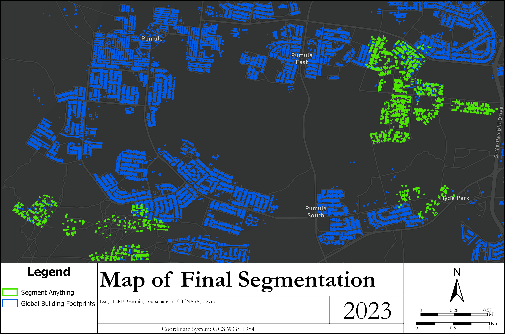
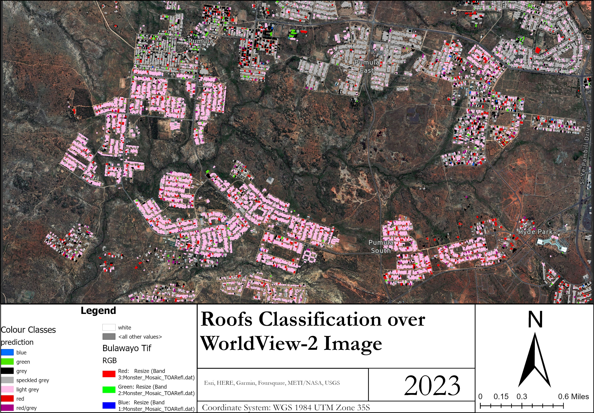
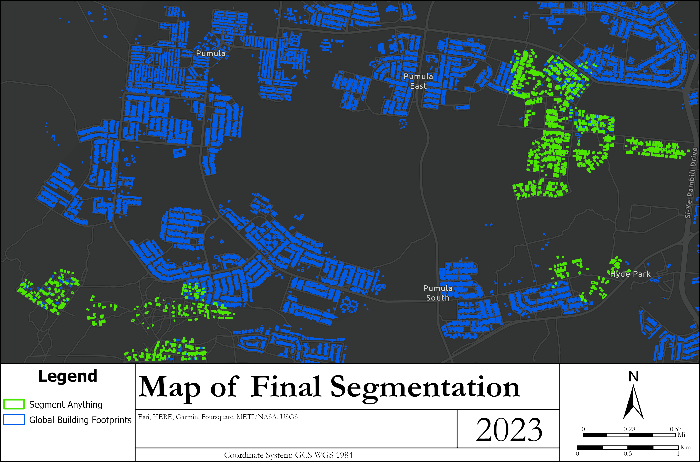
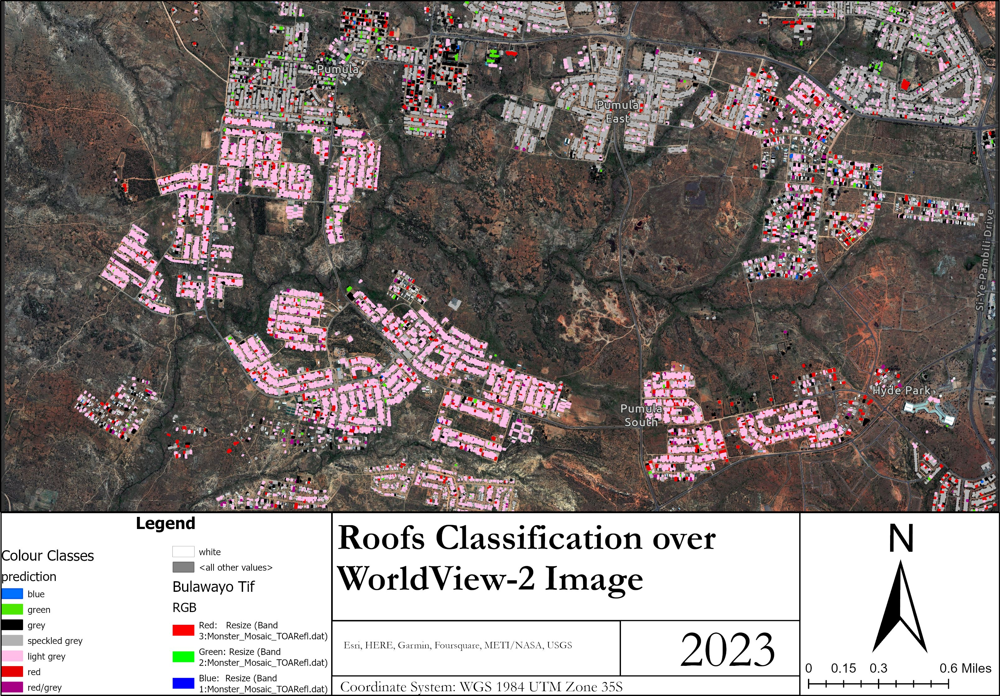

Segmenting and Classifying Roof Materials
in Bulawayo, Zimbabwe
Role: Student, University of Edinburgh
Project Summary
As part of my master's dissertation, I investigated whether roof colour could be extracted and classified from high-resolution satellite imagery in Bulawayo, Zimbabwe. This was part of research exploring if roof materials could serve as a proxy for wealth distribution. Due to the lack of direct data on roofing materials, the study focused on classifying visible roof colours (e.g., red, grey, blue) using multispectral data from WorldView-2.
The approach combined spatial analysis, remote sensing, and machine learning to segment rooftops and classify them by dominant colour. These classifications were then mapped to explore potential patterns of socio-economic variation across the urban landscape.
Key Contributions
- Data Preparation: Extracted RGB and NIR bands relevant for colour-based analysis.
- Training Data: Manually digitised rooftop training polygons in ArcGIS Pro based on visual interpretation.
- Segmentation & Classification: Applied the Segment Anything Model (SAM) for object segmentation and used supervised classifiers (Random Forest, Decision Trees) in Python to categorise rooftops by dominant colour. Python to categorise roofs by colour
- Validation: Assessed model accuracy using confusion matrices and field-verified samples where possible.
- Visualisation: Created a colour-classified map of Bulawayo rooftops.
Tools & Technologies
- ArcGIS Pro
- Python: GeoPandas, Rasterio, scikit-learn, SAMGeo
 



Outcomes
The final output was a geospatial dataset and map showing predominant rooftop colours, which may correspond to materials such as asbestos, metal, or tile. These outputs offer insight into material distribution and potential wealth indicators in the urban area.